45. 피부발진
중요성: 일차적인 질환으로 올 수도 있고 다른 전신질환의 단서가 될 수 있다. 피부 병변의 특성을 파악하여 원인질환을 조기에 감별하는 것은 질병의 치료와 전파 예방에 중요하다.
원인 | |||
알레르기 피부염 | 접촉성 피부염, 약진 등 | ||
감염성 피부질환 | 바이러스 발진 등 | ||
면역성 질환 | 루푸스 등 | ||
평가목표 1) 피부 병변의 특성을 파악하여 원인적인 진단과 치료 방침 수립 2) 필요한 경우 환자의 자가 조치에 대해 교육할 수 있는지 평가 | |||
구체적인 성과 | |||
병력 청취
| 피부 발진의 특성 확인 | 위치: 처음에 어디에서 생겼고, 어디로 퍼졌고, 지금 현재 어디있는지 확인 양상 1) 개수/크기/모양/색깔 2) 딱지/물집/비늘 3) 열감/발적/부종/가려움/따가움/압통 4) 여러 개가 하나로 합쳐지는지 | |
| 피부 이외 장기 질환과의 인과관계 | 감염: 발열/오한/감기기운/오심/구토/설사/호흡곤란/기침/가래/인후통/위험한 성관계 류마티스: 관절통/햇빛 노출부위 발진/거품뇨/구강궤양/성기궤양/팔다리 근력약화 콜린성 두드러기: 찬물/땀 닿으면 악화 알레르기: 약물/음식 | |
신체 진찰 | 국소적인 병변의 특성 확인 | 발진 부위 및 전신 진찰 시진 1) 위치/모양/분포: 발진 부위 / 눈, 코, 구강, 머리카락 사이, 팔다리, 손발톱, 상의 탈의하여 몸통 모두 시진 2) 고름/가피 여부, 2차적 병변 여부(삼출물, 농, 비늘, 태선화) 촉진 1) 눌러봄 (erythema/petechia 구별) 특수검사 1) 아토피 의심 시 설압자로 긁어 피부묘기증 확인 2) 수포성 병변 시 병변 표피를 면봉으로 밀어 표피 박리 확인 (니콜스키 징후) | |
| 피부 발진과 관련된 다른 질환의 소견을 확인 | V/S 확인, 눈(결막, 공막), 구강(궤양) 목: 경부 림프절 촉진 (감염) (류마티스 의심 시) 심음청진, 호흡음청진 관절 시진, 촉진(압통) ROM 평가 | |
| 질환 | 진단 | 치료 |
진단
및
치료 | 바이러스 발진 (홍역, 수두) (1+1) | CBC, 혈청검사 | 대증치료, 항바이러스제(성인 수두) |
| 2기 매독 | VDRL test, TPHA, FTA-ABS | Benzathine penicillin IM |
| 대상포진 (0+1) | 검사 불필요(간혹 PCR) | 항바이러스제, 스테로이드, 통증조질: NSAID, opioid, 항우울제, |
| 옴 | 병변 부위 긁어서 현미경으로 봄 (손가락 사이, 손목 안쪽, 성기에 굴) | 가족 동시 치료, 퍼메트린 연고 (얼굴 제외 도포 후 8시간 후 씻음) |
| 몸백선 (1+0) | KOH 도말검사 | 건조하고 시원한 환경 유지, 국소 항진균제 |
| 어루러기 | 우드등검사, KOH 도말검사, 진균배양 |
|
| 건선 | 피부조직검사, 임상진단 | 보습, 국소 스테로이드, 광선치료, |
| 접촉피부염 (1+1) | 첩포검사, 유발검사 | 원인물질회피, 냉습포, 국소 스테로이드, 국소면역조절제, 항히스타민제 |
| 약물발진 (3+0) | 의심되는 약 사용 금지, 고정약진🡪첩포검사 | 약 끊고 스테로이드 항히스타민제 |
| 아토피 피부염 (1+0) | 피부바늘따끔검사, 혈청 IgE | 피부 보습, 국소 스테로이드, 국소면 |
| 콜린성 두드러기 (1+0) | 운동유발시험, 온열 검사 | 유발요인 회피(과도한 운동, 사우나,맵고 뜨거운 음식), 항히스타민제 |
| 전신홍반루푸스 | CBC, 항핵항체, anti-dsDNA | 국소 스테로이드, hydroxychloroquine |
| 베체트병 (1+0; 결절홍반) | Pathergy test(이상초과민검사), | 피부: colchicine 구강, 신경, 안구: glucocorticoid |
| 피부근염 | 근전도, 근육효소(CK), 근육조직검사 | 국소/전신 스테로이드, 면역억제제 |
| 가려움증 등 병변 조절에 필요한 처치 | 항히스타민제 처방 | |
환자교육 | 1) 유발요인 방지: 음식, 찬물/땀, 꽃가루, 동물, 약물 등 원인 물질 회피 2) 자가 조치: 중성비누 사용, 보습 충분히(로션, 보습제), 병변 부위 긁지 말 것, 심한 운동이나 더운 목욕 피하기, 땀 잘 흡수하는 면 제품 착용, 스트레스 줄이기 | ||
윤리적 법적 고려 | 전염성 피부질환에 대한 신고/격리 1) 수두, 홍역: 2급 감염병 – 24시간 이내 신고, 격리 i) 수두: 모든 병변에 가피가 생길 때까지 (발진 발생 후 최소 5일간) ii) 홍역: 검사 확인 전 의심단계에 격리, 발진 4일 전부터 4일 후까지 (발진 ± 4) 증상 심하지 않으면 자택격리 2) 매독: 3급 감염병 – 24시간 이내 신고 | ||
의사소통/환자의사관계 | 성매개성 질환을 의심하는 경우 환자에게 심리적인 지지를 얻은 다음 자발적 답변을 얻는 병력청취 | ||
[감별진단] + 수족구
질환 | 병력청취 | 질환설명 | 발진 위치/특징 | 검사 | 치료 | ||
감염 | 바이러스 발진 (홍역, 수두) 1+1 | 발열, 감기 증상 홍역: 3C(기침, 콧물, 결막염) + Koplik’s spot |
| 중심부 🡪 주변부 | CBC, 혈청검사 | 대증치료, 항바이러스제(성인 수두) | |
|
|
|
| 전신 피부 발진 수두: 다양한 형태 |
|
| |
| 2기 매독 | 발열, 감기 증상 위험한 성관계 |
| 전신, 손, 발 | VDRL test, TPHA, FTA-ABS | Benzathine penicillin IM | |
|
|
|
| 외음부 궤양 (+/-) |
|
| |
| 대상포진 0+1 | 2~3일 후 통증 노인, 면역억제자 | 바이러스가 잠복해있다가 면역력이 떨어지면서 다시 증상 일으킴 | 일측성, dermatome | 검사 불필요(간혹 PCR) | 항바이러스제, 스테로이드, 통증조질: NSAID, opioid, 항우울제, 항경련제 | |
|
|
|
| 고름, 딱지, 궤양 |
|
| |
| 몸백선 1+0 | 가려움, 각질 | 곰팡이균(피부사상균=무좀균)이 몸에 감염된 것 | 목, 팔, 다리, 몸 | KOH 검사 | 건조, 시원한 환경 유지, 국소 항진균제 | |
|
|
|
| 고리형 병변, 중앙은 피부색, 주변 경계부위는 하얀 각질 동반한 잔물집, 붉은 구진 |
|
| |
| 옴 | 가족 중 유사 증상, 밤에 심해지는 가려움증 | 옴 진드기가 피부 각질층에 굴을 파고 들어감 | 사타구니, 하복부, 겨드랑이 | 병변 부위 긁어서 현미경으로 봄 (손가락 사이, 손목 안쪽, 성기에 굴) | 가족 동시 치료, 퍼메트린 연고 (얼굴 제외 도포 후 8시간 후 씻음) 침구, 옷 뜨거운 물에 세탁 | |
|
|
|
| 심한 가려움 잠 잘 때(밤에) 심함 |
|
| |
| 어루러기 | 무증상 ~ 경미한 가려움증 | 곰팡이균 감염 | 땀 많은 부위 (가슴, 등, 겨드랑이, 목) | 우드등검사, KOH 도말검사, 진균배양 | 건조하고 시원한 환경 유지, 국소 항진균제 | |
|
|
|
| 얼룩덜룩한 반점 (흰색, 갈색) |
|
| |
염증 | 건선 | 손발톱 변화 | 면역세포가 피부 각질세포를 자극해 각질세포의 과다 증식과 염증을 일으켜서 각질이 겹겹이 쌓이는 질환 | 팔꿈치, 엉덩이, 두피 | 피부조직검사, 임상진단 | 보습, 국소 스테로이드, 광선치료, | |
|
|
|
| 구진 🡪 뭉쳐서 판 위에 은백색 비늘이 겹겹이 쌓여 나타남 |
|
| |
| 접촉 피부염 1+1 | 비누, 샴푸, 세제, 화장품, 벨트, 목걸이 등과 접촉 | 접촉한 물질 자체의 자극에 의해, 또는 접촉물질에 대한 알레르기로 인해 생기는 피부염 | 접촉 부위 | 첩포검사, 유발검사 | 원인물질회피, 냉습포, 국소 스테로이드, 국소면역조절제, 항히스타민제 | |
|
|
|
| 접촉 부위에만 발진 |
|
| |
알레르기 | 약물 발진 3+0 | 고정 발진: 동일한 약을 복용할 때만 발진 生 |
| 1) 전신발진 2) 고정약진: 동일 부위 유사 병변 과색소 침착 | 의심되는 약 사용 금지, 고정약진🡪첩포검사 | 약 끊고 스테로이드 항히스타민제 | |
| 아토피 피부염 1+0 | 가려움증, 피부건조 알레르기 질환 가족력 | 만성 염증성 피부염 | 2세 미만: 얼굴, 사지폄쪽 2세 이상: 얼굴, 목, 사지굽힘쪽 | 피부바늘따끔검사, 혈청 IgE | 피부 보습, 국소 스테로이드, 국소면 | |
|
|
|
| 습진성 병변 |
|
| |
| 콜린성 두드러기 1+0 | 운동/땀에 의해 악화 | 운동, 스트레스, 뜨거운 목욕으로 심부 체온이 1℃ 정도 상승했을 때 두드러기가 발생하는 것 |
| 운동유발시험, 온열 검사 | 유발요인 회피(과도한 운동, 사우나,맵고 뜨거운 음식), 항히스타민제 | |
류마티스 | SLE | 광과민성, 구강 궤양, 관절염, 거품뇨 | 만성 염증성 자가면역질환 (우리 몸의 면역체계가 자기 자신을 공격) | malar rash(nasolabial fold), discoid rash | CBC, 항핵항체, anti-dsDNA | 국소 스테로이드, hydroxychloroquine | |
| 베체트병 (결절홍반) 1+0 | 포도막염, 관절염 | 전신의 혈관에 염증이 발생하는 자가면역질환 | 구강, 생식기 궤양 | Pathergy test(이상초과민검사), | 피부: colchicine 구강, 신경, 안구: glucocorticoid | |
| 피부근염 | 머리빗기 어렵고 계단 오르기 어려움, 팔다리 근위부 근력 약화 | 골격근에 염증이 생기는 자가면역질환 | 눈 주위: heliotrope rash 손: gottron papule | 근전도, 근육효소(CK), 근육조직검사 | 국소/전신 스테로이드, 면역억제제 | |
결절홍반: (감염) HSV, 사슬알균, 결핵균 / (약물) 항생제, 경구피임약 / (암) 백혈병, 림프종 / (만성염증질환) 베체트병, IBD 등 다양한 원인에 대한 과민반응. 급성으로 통증, 압통, 국소열감 동반 / 주로 정강이나 발목
홍역 | 수두 | 2기 매독 | 대상포진 | |||
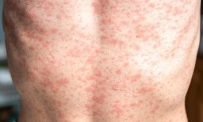 |
| 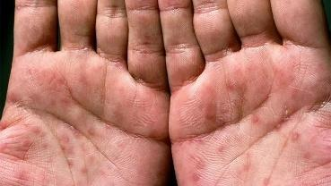 | 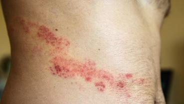 | |||
옴 | 어루러기 | 건선 | 접촉피부염 | |||
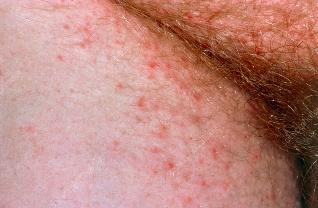 | 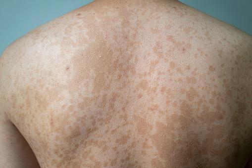 |
| 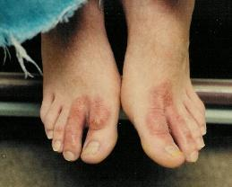 | |||
약물 발진 | 아토피 피부염 | 콜린성 두드러기 | Malar rash | |||
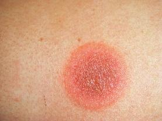 | 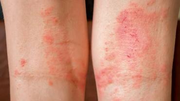 |
| 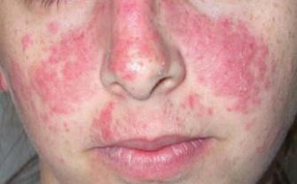 | |||
Discoid rash | 베체트병 | Heliotrope rash | Gottron’s papule | |||
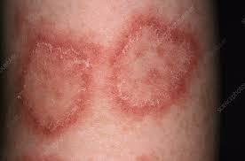 |
| 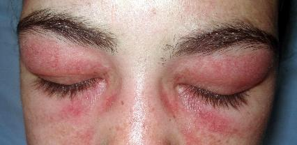 | 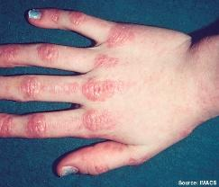 | |||
| ||||||
| ||||||
O | 언제 24시간 이내(두드러기) vs 24시간 이상(발진) Open Q 특별한 상황 | |||||
L | [처음/지금] 어디에 처음 생겨서 어디로 퍼졌나요? 🡪 지금은 어디어디에 있나요 | |||||
D | 얼마나 오래/얼마나 자주 밤/낮 변화 옴: 밤에 심함 | |||||
Co | 크기/부위가 커지나요? / 개수 늘어나나요? 증상(가려움 or 통증)이 더 심해지나요? | |||||
Ex | 이전? -> 피부과 치료? | |||||
C | [양상①] cscs 개수count / 크기 size / 색깔 color / 모양 shape 🡪 발진이 여러 개가 하나로 합쳐지기도 하나요? 모수크색 [양상②] 물집 / 비늘 / 딱지 / 가려움 / 따가움 아픔따가움가려움뜨거워빨개비늘딱지 물개비늘가따 [염증] 열감 / 발적 / 부종 / 압통 발발부통 일상생활 지장 - PPI | |||||
F(피부과) | Open Q 언제 발진이 더 심해지나요? 매콜음식접촉 -접촉 [접촉피부염] 새로운 비누, 화장품, 옷 접촉 [2기 매독] 위험한 성관계 – 비밀보장 -음식 [음식 알레르기] 음식 (뭐 먹었는지) -운동 [콜린성 두드러기] 찬물 / 땀 / 운동 -환경 [옴, 백선증] 습한 환경, 불결한 침구류, 한동안 씻지 못한 적? | |||||
A | [전신] 발열 / 오한 / 피로 / 체중변화 / 감기기운 / 근육통(피부근염) / 관절통(SLE) [호흡기] 기침 / 가래 / 콧물 / 인후통 (감기증상-홍역/수두) [소화기] 오심 / 구토 / 설사 [알레르기] 입술 부종 / 호흡곤란 [류마티스] - [신장] 거품뇨 - [피부] 구강, 성기 궤양/ 햇빛 노출 부위에 피부 발진이 잘 생기나요? - [신경] 팔다리 힘빠짐 | |||||
E | 이전 건강 검진 | |||||
외 | 수술 | |||||
과 | 알레르기 천식 / 비염 / 아토피 피부염 / 알레르기(특정 음식, 꽃가루, 동물) / 최근 감기 | |||||
약 | 현재 복용 / 최근 새롭게 먹는 약, 건강보조식품 🡪 (지금은 안 먹는다면) 약물을 중단하면 좋아지나요? | |||||
사 | 술담커 / 직업 / 스트레스 / 식습관 / 운동 여행 벌레 물린 곳 | |||||
가 | 비슷한 증상 (옴) 가족 중 천식 / 비염 / 아토피 피부염 / 알레르기 | |||||
여 | 월경 주기 규칙적 / 월경량 / 질분비물 / 성교통 | |||||
추가로 말씀하고 싶으신 내용 있으신가요? | ||||||
P/Ex | 전신 | 눈 🡪 구강(궤양) 🡪 목(경부 림프절) 🡪 (류마티스 질환 의심 시 흉부 심음/호흡음 청진) V/S 확인 (혈압, 맥박, 호흡수, 체온) 1) 눈: 결막, 공막 2) 입: 궤양 3) 목: 림프절 (감염)
류마티스질환 의심 시 1) 심음, 호흡음 청진 2) 관절 시진(발적, 부종, 변형), 촉진 (압통) 3) ROM 검사 | ||||
| 피부발진 | [시진(위치/모양)] 발진 부위/(전신탈의)눈, 코, 구강, 머리카락 사이, 팔다리, 손톱, 발톱, 상의 탈의하여 몸통 모두 [발진(모양/분포)] 고름이나 가피 여부, 2차적 병변 여부(삼출물, 농, 비늘, 태선화) 확인 [촉진(erythema/petechia 구별)] 제가 한 번 눌러보겠습니다. 아프면 말씀하세요. [특수검사] - 아토피 의심 시 설압자로 긁어서 피부묘기증 확인 - 수포성 병변 시 니콜스키 징후 확인 (병변 표피 부위를 면봉으로 밀어 표피 박리 확인) | ||||
검사 치료 | 기본검사 | 혈액검사: CBC, 혈청 IgE, 염증수치, 자가항체 미생물검사: 진균 – 우드등검사, KOH 검사 접촉피부염: 첩포검사 (의심 물질 부착 후 2일째, 4일째 피부 반응 확인) | ||||
| 기본치료 | 감염: 항바이러스제, 항진균제 염증/알레르기/류마티스: 스테로이드, 보습제, 항히스타민제 | ||||
| 홍역,수두 | CBC, 혈청검사 | 대증치료, 항바이러스제(성인 수두) | |||
| 대상포진 | 검사 불필요(간혹 PCR) | 항바이러스제, 스테로이드, 통증조질: NSAID, opioid, 항우울제, 항경련제 | |||
| 몸백선 | KOH 도말검사 | 건조하고 시원한 환경 유지, 국소 항진균제 | |||
| 접촉피부염 | 첩포검사, 유발검사 | 원인물질회피, 냉습포, 국소 스테로이드, 국소면역조절제, 항히스타민제 | |||
| 약물발진 | 의심되는 약 사용 금지, 고정약진🡪첩포검사 | 약 끊고 스테로이드 항히스타민제 | |||
| 아토피 피부염 | 피부바늘따끔검사, 혈청 IgE | 피부 보습, 국소 스테로이드, 국소면 | |||
| 콜린성 두드러기 | 운동유발시험, 온열 검사 | 유발요인 회피(과도한 운동, 사우나,맵고 뜨거운 음식), 항히스타민제 | |||
| 베체트병 | Pathergy test(이상초과민검사), | 피부: colchicine 구강, 신경, 안구: glucocorticoid | |||
교육 | [안심] 정확한 원인을 파악해 치료하면 증상이 많이 좋아지실 것입니다. [응급] 아나필락시스 – 갑자기 호흡곤란, 어지러움, 두근거림 발생 시 빨리 병원에 와서 응급처치 받아야 [회피] 원인물질 회피: 음식, 찬물/땀, 꽃가루, 동물, 약물 등 [교정] 중성비누 사용, 보습 충분히(로션, 보습제), 병변 부위 긁지 말 것, 심한 운동이나 더운 목욕 피하기, 땀 잘 흡수하는 면 제품 착용, 꽉 조이는 옷 피하기, 스트레스 줄이기
[격리/신고] – 전염성 피부질환 수두, 홍역: 2급 감염병 -> 격리, 신고 필요 i) 수두: 모든 병변에 가피가 생길 때까지 (발진 발생 후 최소 5일간) ii) 홍역: 검사 확인 전 의심단계에 격리, 발진 4일 전부터 4일 후까지 (발진 ± 4) 증상 심하지 않으면 자택격리 매독: 3급 -> 신고 | |||||


교육 | 공통 | 아나필락시스: 갑자기 숨을 잘 못 쉬겠거나 어지럽고 가슴이 두근거리는 등의 증상이 발생하면 반드시 병원에 오셔서 응급 조치를 받으셔야 합니다. |
| 접촉성 피부염 | 재접촉 피하기 |
| 아토피 피부염 | 청결 유지, 보습 신경쓰기, 가려워도 긁지 않기 |
| 바이러스 발진 | 안정 취하기 |
| 대상포진 | 50세 이상: 예방접종(싱그릭스, 조스타박스) |
| 어루러기 | 면역력 관리(재발 잘함), 피부 위생 관리(땀나면 옷 갈아입기, 몸 청결, 통풍이 잘 되는 옷) |
| 전신 홍반성 루푸스 | 평상시 자외선 차단제를 잘 발라주시고, 금연 및 운동해주시면 증상 개선에 도움이 됩니다. 이런 자가면역질환은 심장이나 폐처럼 중요한 기관을 나쁘게 하는 경우가 있어서 앞으로 주기적으로 검진을 받으셔야 합니다. 혹시 임신계획이 있다면 유산되기 쉽기 때문에 임신 전에 의사에게 상담을 꼭 받으셔야 합니다. |
| 베체트병 | 관절을 쉬게 하기, 관절에 무리가지 않는 근력운동 정기검진(눈, 폐, 콩팥 등) 금연 |
| 피부근염 | 물리치료: 관절의 운동범위를 유지하기 위해 물리치료를 받으시면 좋습니다. |
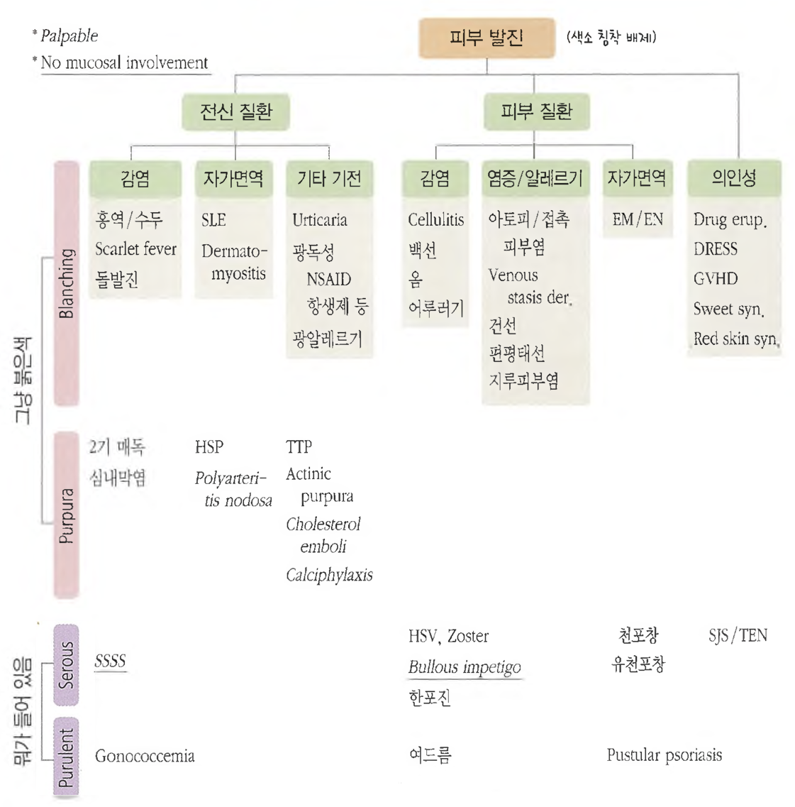